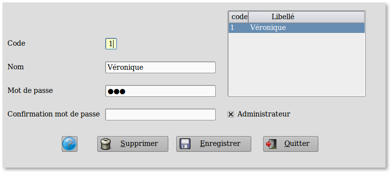

~ Laurux.Pos ~

~ Laurux.Pos ~ |
|
|
|
Table des caissières.

Dans cet écran on va pouvoir créer,
modifier ou supprimer les caissier(e)s.
Le code se saisit sur 1 caractère numérique et
l'intitulé sur 20 caractères alaphanumériques.
Le mot de passe qui fera 15 caractères
alphanumériques maximum devra être confirmé dans la deuxième ligne.
On peut définir si la caissière a les droits d'administration en cochant le bouton "Administrateur".
L'administrateur a le droit de gerer les remises,
les annulations de tickets, la saisie des avoirs, les modifications de
prix, les bandes Z. Il pourra effectuer les sorties hors vente ainsi que les entrées espèces hors vente.
Pour suppimer un vendeur, on le sélectionne puis on clique sur le bouton "Supprimer".
----------------------------------------------------------------------------------------------------------------------